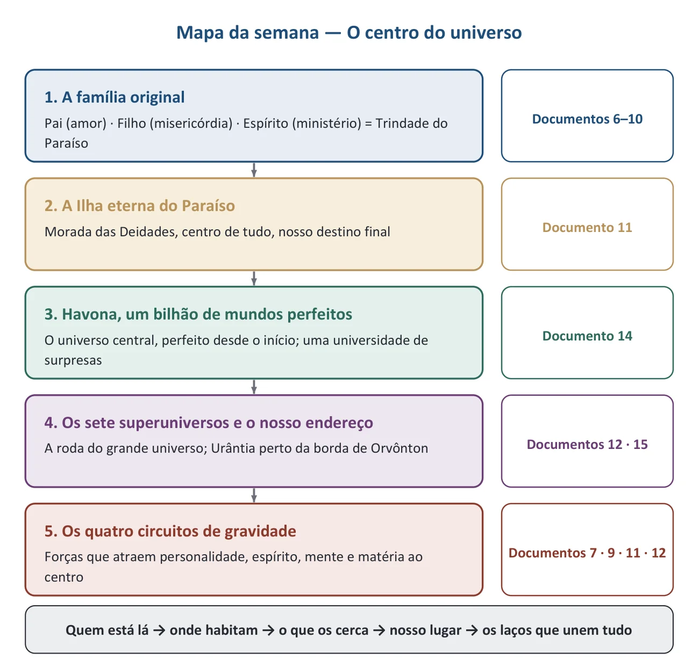
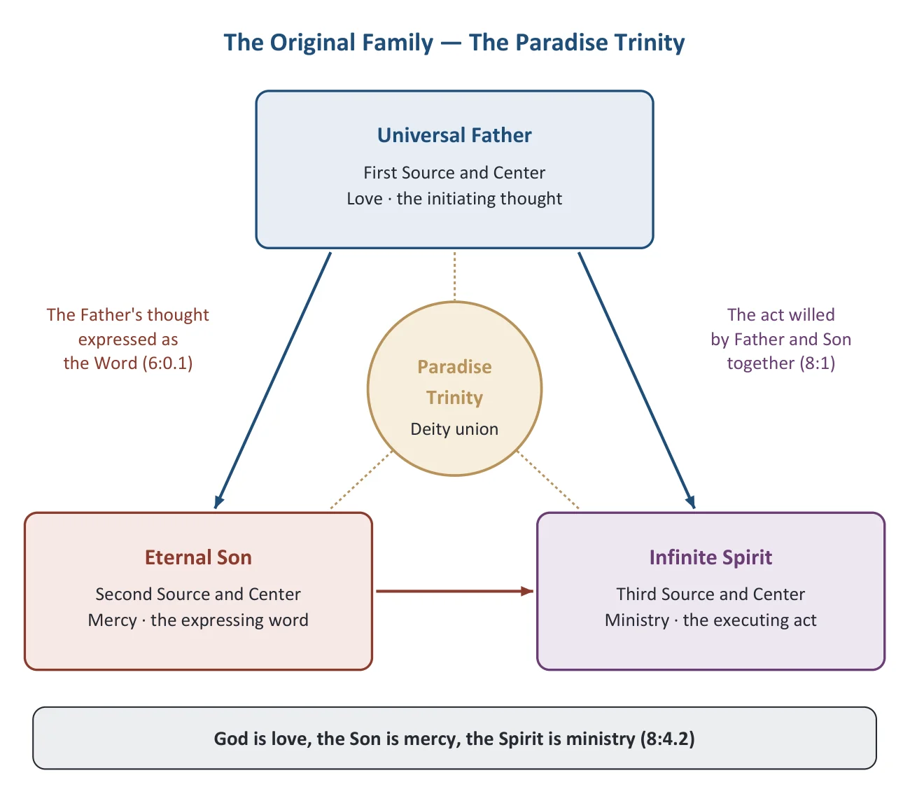
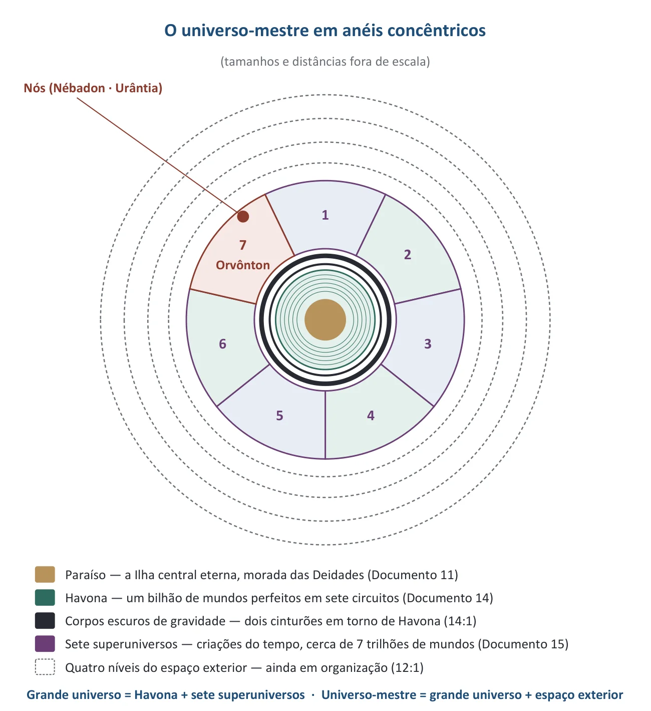
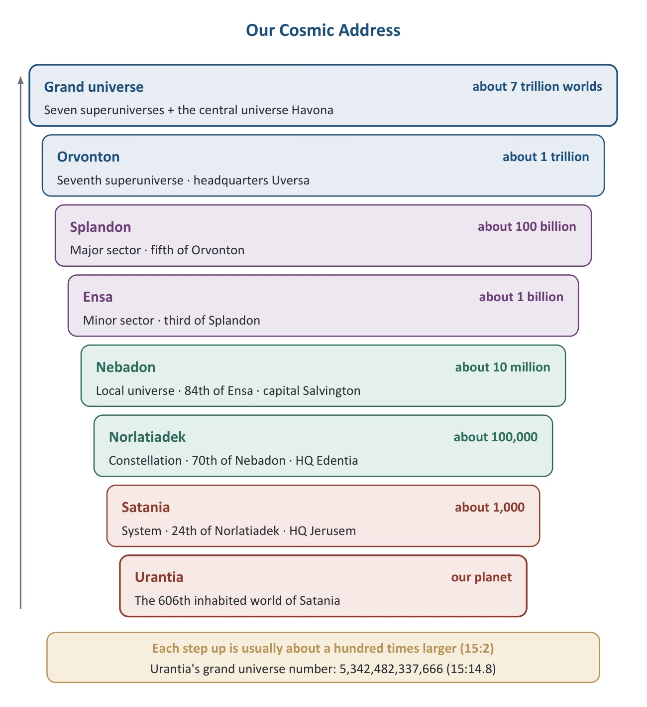
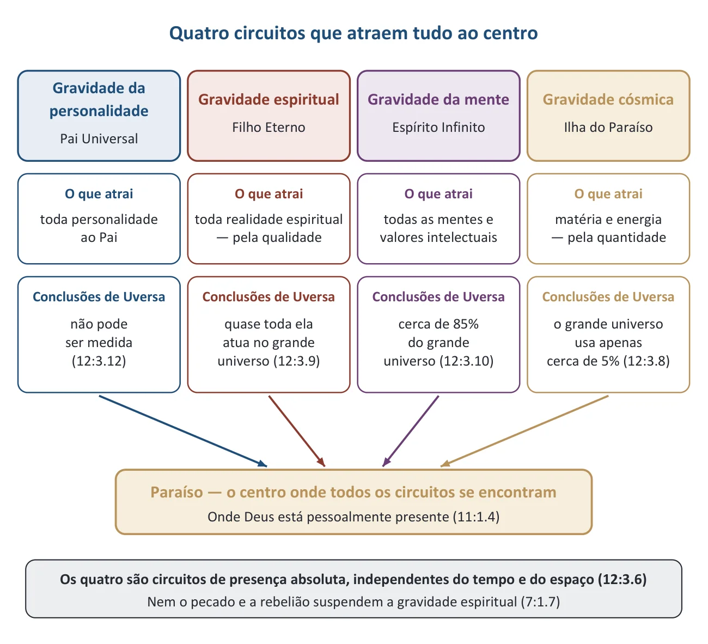

Leitura: Documentos 6–15 (principalmente Documento 6:2–3 · Documento 8:1, 4 · Documento 10:3–4 · Documento 11:1, 9 · Documento 12:1, 3 · Documento 14:0, 5 · Documento 15:2, 14)

O Pai Universal que encontramos na semana passada não está sozinho. O Filho Eterno e o Espírito Infinito estão com o Pai desde a eternidade, e os três são um como a Trindade do Paraíso. O lar Deles, a Ilha eterna do Paraíso, é rodeado por Havona, um bilhão de mundos perfeitos, e além de Havona os sete superuniversos giram em torno do centro. O nosso próprio planeta fica perto da borda externa do sétimo. Nesta semana desenhamos essa vasta estrutura como um único mapa e olhamos para os quatro circuitos que mantêm tudo unido.
Muitos de nós, quando crianças, escrevemos alguma vez o nosso endereço na primeira página de um caderno e fomos adiante. Começávamos pelo número da casa, depois a rua, a cidade, o país e, por fim, “Ásia, Terra, Sistema Solar, Via Láctea, Universo”. Mas essa última linha sempre parecia vaga. O que há além do universo? O universo tem, afinal, um centro?
Os documentos 6 a 15, na Parte I de O Livro de Urântia, preenchem essa última linha. O universo tem, sim, um centro, e o centro não está vazio. Ali se encontra um lar onde o Pai, o Filho e o Espírito habitam juntos.
Na semana passada vimos quem é o Pai Universal. Nesta semana acompanhamos, passo a passo, a Sua família, o Seu lar e o longo endereço que vai desse lar até o nosso planeta. Há muitos números e nomes, mas nenhum deles precisa ser decorado. Basta conseguir esboçar um grande quadro.
O Livro de Urântia apresenta Deus como três pessoas: Deus, o Pai; Deus, o Filho; e Deus, o Espírito. Também os chama, pela ordem, de Primeira, Segunda e Terceira Fonte e Centro. O documento 6 apresenta o segundo deles, o Filho Eterno, assim:
O FILHO Eterno é a expressão perfeita e final da “primeira” idéia pessoal e absoluta do Pai Universal. Conseqüentemente, em qualquer tempo e circunstância que o Pai se expresse a Si próprio, pessoal e absolutamente, Ele o faz por meio do seu Filho Eterno, que sempre foi, é agora e sempre será a Palavra viva e divina.6:0.1
Por que “primeira” está entre aspas? O parágrafo seguinte explica.
O Pai Universal nunca poderia ter tido um primeiro pensamento, em um sentido seqüencial, nem poderia o Filho Eterno jamais ter tido um princípio. Mas fui instruído a retratar as realidades da eternidade, para as mentes dos mortais, limitadas pelo tempo, por meio de tais simbologias de pensamento, e a designar as relações de eternidade, por meio de conceitos tais, que todos estejam em uma seqüência temporal.6:0.2
Palavras como “antes” e “depois” são tomadas de empréstimo para que nós, que vivemos no tempo, possamos acompanhar. O Filho é o pensamento do Pai que se manifesta como Palavra. É por isso que, olhando para o Filho, vemos o Pai.
O Filho Eterno é a Palavra eterna de Deus. Ele é inteiramente como o Pai; de fato, o Filho Eterno é Deus, o Pai, pessoalmente manifestado no universo dos universos. E assim foi, é e será para sempre verdadeiro, sobre o Filho Eterno e todos os Filhos Criadores coordenados: “Aquele que vir o Filho, terá visto o Pai”.6:2.2
Como, então, diferem o Pai e o Filho? O documento 6 responde com duas palavras: amor e misericórdia.
Deus é amor, o Filho é misericórdia. A misericórdia é o amor aplicado, é o amor do Pai em ação, na pessoa do Seu Filho Eterno. O amor deste Filho universal é, do mesmo modo, universal. Tal como o amor é compreendido em um planeta sexuado, o amor de Deus é mais comparável ao amor de um pai, enquanto o amor do Filho Eterno é mais como a afeição de uma mãe.6:3.5
A misericórdia é o amor estendendo a mão. O amor dos dois difere não no que é, mas apenas no modo como se expressa.
Quanto à bondade divina, eu não posso discernir nenhuma diferença entre o Pai e o Filho. O Pai ama aos filhos do Seu universo como um pai; o Filho Eterno vê todas as criaturas tanto como um pai, quanto como um irmão.6:2.8
Será, então, que o Filho precisa persuadir o Pai para que a misericórdia possa ser concedida? O documento 6 diz firmemente que não.
Quão errado seria visualizar o Filho Eterno pedindo ao Pai Universal que mostrasse misericórdia às Suas criaturas inferiores, dos mundos materiais do espaço! Tais conceitos de Deus são rudimentares e grotescos. … O amor do Pai é a fonte real e eterna da misericórdia do Filho.6:3.4
Um mal-entendido comum: Deus julga com severidade, e o Filho se coloca entre nós e o Pai, acalmando a Sua ira e obtendo misericórdia para nós. O que diz O Livro de Urântia: a misericórdia do Filho flui do amor do Pai (6:3.4). Conceitos como o de um Pai que hesita em ser misericordioso e de um Filho que O convence a sê-lo são chamados de “rudimentares e grotescos”.
O Filho não vive dentro de nós, mas nos envolve em todos os momentos.
E, da mesma forma que o fragmento do espírito do Pai reside dentro de vós, a presença espiritual do Filho vos envolve, pois estes dois trabalham como um para o vosso avanço espiritual.6:5.7
A terceira pessoa é o Espírito Infinito. Quando o Pai e o Filho, juntos, quiseram uma única ação infinita, o Espírito Infinito tornou-se pessoal. É por isso que Ele é chamado também de Agente Conjunto e de Deus da Ação. O documento 8 pinta esse momento como uma cortina que se ergue num grande palco.
Na eternidade do passado, com a personalização do Espírito Infinito, o ciclo da personalidade divina torna-se perfeito e completo. O Deus da Ação é existente, e o imenso cenário do espaço está pronto para a atividade estupenda da criação — a aventura universal — , o panorama divino dos tempos eternos.8:1.1
O documento 8, então, reúne o caráter dos três numa só frase. Se apenas uma frase desta semana for lembrada, que seja esta.
Deus é amor, o Filho é misericórdia, o Espírito é o ministério — a ministração do amor divino e da misericórdia sem fim, para toda a criação inteligente. O Espírito é a personificação do amor do Pai e da misericórdia do Filho; nele, Eles estão eternamente unidos para o serviço universal.8:4.2
Ministério significa cuidar dos outros e servi-los ao lado deles. O amor torna-se misericórdia, a misericórdia torna-se serviço, e assim chega à criatura. No entanto, o modo como esse Espírito excelso vem até nós é surpreendentemente humilde.
Nessas criações locais, o Espírito não desce até as raças materiais à semelhança da carne mortal, como fazem alguns dos Filhos de Deus; o Espírito Infinito e os seus Espíritos coordenados descem, sim, e submetem-se alegremente a uma série surpreendente de atenuações da divindade, chegando mesmo a surgir como anjos para estar ao vosso lado e guiar-vos ao longo dos caminhos rasteiros da existência terrena.8:4.5
Os filhos do Filho às vezes vêm em carne humana; os filhos do Espírito vêm como anjos que ficam ao nosso lado. Por trás dos inúmeros anjos que encontraremos nas semanas 4 e 5 está o Espírito Infinito, que Se humilhou exatamente desse modo.
Cada um dos três é uma pessoa completa e, no entanto, os três são um. O Livro de Urântia chama essa unidade de Trindade do Paraíso. O documento 10 descreve como os três trabalham juntos em termos de palavra e ato.
Os Filhos divinos são realmente a “Palavra de Deus”; mas os filhos do Espírito são verdadeiramente o “Ato de Deus”. Deus fala por intermédio do Filho e, com o Filho, atua por intermédio do Espírito Infinito10:3.3
Em vez de nos esforçarmos para entender cada detalhe de como os três se relacionam, o documento 6 nos pede que lembremos uma coisa simples.
na administração dos universos, Eles ficam tão entrelaçados e inter-relacionados, que nem sempre é possível distinguir entre Eles. … meramente relembrai-vos de que Deus é o pensamento inicial e o Filho é a palavra plena de expressão.6:8.3
Acrescente o Espírito, e o Espírito é o ato que realiza esse pensamento e essa palavra. Assim como o pensamento, a palavra e a ação são um numa única pessoa, assim os três são um. Isso não significa, porém, que três Deuses se sentem juntos e deliberem.
A Trindade do Paraíso é real. Ela existe como a união, na Deidade, do Pai, do Filho e do Espírito … Pai, Filho e Espírito podem colaborar de um modo não trinitário, mas não como três Deidades. Enquanto pessoas, Eles podem colaborar conforme escolherem, mas então não estariam atuando como uma Trindade.10:4.4
O autor do documento 10 chega a chamar a Trindade da única coisa no universo que tinha de existir.
A partir da situação presente, no círculo da eternidade, olhando para trás, para o passado sem fim, podemos descobrir apenas uma inevitabilidade inescapável nos assuntos do universo, e esta é a Trindade do Paraíso.10:0.3
Como o Pai partilhou a Si mesmo sem reservas com o Filho e o Espírito, o universo tem uma família desde o princípio. Ele não começou como o monólogo de um Ser solitário, mas como uma conversa entre três que se amam.

| Ponto de comparação | Pai Universal | Filho Eterno | Espírito Infinito |
|---|---|---|---|
| Outros nomes | Primeira Fonte e Centro | Segunda Fonte e Centro, a Palavra | Terceira Fonte e Centro, Agente Conjunto |
| Palavra-chave do caráter | Amor | Misericórdia | Ministério |
| Semelhança | O pensamento inicial | A palavra que expressa | O ato que executa |
| Como vem até nós | Ajustador do Pensamento, o dom da personalidade | Filho Criador (Michael) | Espírito Materno, anjos |
| Circuito que sustenta | Gravidade da personalidade | Gravidade do espírito | Gravidade da mente |
O documento 6 comenta que o início do Evangelho de João, “No princípio era o Verbo” (João 1:1–3), teria dito a verdade se se referisse ao Filho Eterno (6:1.3). Também diz que “quem me vê a mim vê o Pai” (João 14:9) é verdade a respeito do Filho Eterno (6:2.2). A igreja tem batizado “em nome do Pai, e do Filho, e do Espírito Santo” (Mateus 28:19). Em O Livro de Urântia, porém, o Espírito Santo refere-se principalmente ao ministério do Espírito Materno do universo local (semana 5) e, por isso, não deve ser simplesmente identificado com o Espírito Infinito.
Na semana 1 descrevemos brevemente o Paraíso como “a Ilha eterna no centro do universo”. O documento 11 enfatiza que essa Ilha não é um símbolo, mas um lugar real.
O PARAÍSO é o centro eterno do universo dos universos, e o local de morada do Pai Universal, do Filho Eterno, do Espírito Infinito e dos Seus coligados e coordenados divinos. Esta Ilha Central é o corpo organizado mais gigantesco de realidade cósmica em todo o universo-mestre. O Paraíso é uma esfera material, bem como uma morada espiritual.11:0.1
O universo-mestre é o todo: os universos organizados agora, junto com os universos exteriores ainda por organizar. A Ilha no seu centro não é uma bola redonda, mas uma ampla elipse (11:2.2), e no centro exato da sua superfície superior habita o Pai.
O Paraíso serve a muitos propósitos na administração dos reinos universais; para os seres criaturas, contudo, ele existe primordialmente, como o local de morada da Deidade. A presença pessoal do Pai Universal é residente no centro exato da superfície superior dessa morada quase circular, mas não esférica, das Deidades. Essa presença do Pai Universal no Paraíso é envolvida, total e diretamente, pela presença pessoal do Filho Eterno, ao mesmo tempo em que são ambos revestidos pela glória indescritível do Espírito Infinito.11:1.1
Se Deus está em toda parte, por que dizer que Ele habita num lugar? Pelo Seu espírito, Deus está presente em toda parte, mas, como pessoa, Ele tem um lugar onde pode ser encontrado.
Deus habita, tem habitado e para sempre irá habitar nessa mesma morada central e eterna. Nós O temos sempre encontrado e sempre O encontraremos lá.11:1.2
O documento 11 compara isso às cidades da Terra.
Se fôsseis navegadores inteligentes, equipados com uma nave, mapas e bússolas, vós iríeis achar essas cidades prontamente. Do mesmo modo, se tivésseis o tempo e os meios de viajar, se fôsseis espiritualmente qualificados e se tivésseis o norteamento necessário, vós poderíeis ser pilotados de universo a universo e de circuito a circuito, em uma jornada sempre para o interior, através dos reinos estelares, até que, por fim, estaríeis diante do resplendor central da glória espiritual do Pai Universal.11:1.3
Uma cidade não deixa de existir porque nunca a visitamos. O Paraíso é o centro da administração do universo e a fonte de toda energia, mas para nós o seu maior significado está em outra coisa.
Afinal, para os mortais, a coisa mais importante sobre o Paraíso eterno é o fato de que esta morada perfeita do Pai Universal é o destino real e remoto das almas imortais dos filhos mortais e materiais de Deus, as criaturas ascendentes dos mundos evolucionários do tempo e do espaço. Cada mortal sabedor de Deus, que abraçou a carreira de cumprir a vontade do Pai, já embarcou na trilha longa que vai até o Paraíso, da busca da divindade e do alcançar da perfeição.11:9.8
O Paraíso não é uma paisagem celeste distante, mas um destino a que de fato chegaremos. A jornada não começa depois da morte; já começou no dia em que escolhemos fazer a vontade do Pai. Ainda assim, o lugar em si não deve ser confundido com Deus.
A Deidade pode causar muito daquilo que não é Deidade, e o Paraíso não é uma Deidade11:9.4
Um mal-entendido comum: o Paraíso é apenas um estado de espírito ou um símbolo, e não há um “lugar” onde Deus habite. Ou, no extremo oposto, o próprio Paraíso é Deus. O que diz O Livro de Urântia: o Paraíso é um lugar real, ao mesmo tempo uma morada espiritual e uma esfera material (11:0.1). No entanto, o Paraíso não é Deidade, nem é um ser consciente (11:9.4).
Imediatamente em torno do Paraíso fica o universo central, Havona. Ele não foi moldado ao longo de longas eras de evolução; foi feito perfeito desde o princípio.
Esse é o único conjunto consolidado, perfeito e estabilizado de mundos. É um universo criado em plenitude e perfeição; não se trata de um desenvolvimento evolucionário. É o núcleo eterno da perfeição; e em torno dele gira a procissão interminável de universos que constituem os experimentos evolucionários formidáveis, a aventura audaciosa dos Filhos Criadores de Deus14:0.2
Havona é o padrão, o modelo, para os universos de fora. Os seus mundos estão dispostos em torno do Paraíso em sete anéis.
Os mundos de Havona, em um total de um bilhão, estão dispostos em sete circuitos concêntricos que rodeiam diretamente as três órbitas dos satélites do Paraíso. … Cada circuito é diferente, mas todos são perfeitamente equilibrados e organizados com refinamento, e cada um é permeado por uma representação especializada do Espírito Infinito, um dos Sete Espíritos dos Circuitos.14:1.9
O documento 12 resume Havona assim.
Havona, o universo central, não é uma criação no tempo; tem uma existência eterna. Este universo, sem começo e sem fim no tempo, consiste em um bilhão de esferas de perfeição sublime e é rodeado de enormes corpos escuros de gravidade.12:1.10
Os corpos escuros de gravidade não refletem nem absorvem a luz, e formam dois cinturões que giram em sentidos opostos (14:1.14–15). Esses cinturões protegem o universo central e mantêm em equilíbrio a sua gravidade. A propósito do tempo em Havona, aparece uma frase conhecida dos leitores da Bíblia.
ainda que as suas velocidades sejam enormes, devido à sua posição entre os corpos escuros de gravidade e o gigantesco Paraíso, quase mil anos fazem-se necessários para que essas esferas completem a sua órbita. Inadvertidamente, vós lestes a verdade quando os vossos olhos pousaram sobre a afirmação de que “um dia é como mil anos para Deus, não mais que a vigília de uma noite”.14:1.12
O Salmo 90:4 canta: “Porque mil anos são aos teus olhos como o dia de ontem que passou, e como a vigília da noite”, e 2 Pedro 3:8 diz que “um dia para o Senhor é como mil anos, e mil anos como um dia”. O documento 14 acrescenta que esse dito corresponde ao tempo de órbita do circuito interno de Havona.
Havona é a última escola que um mortal ascendente freqüenta antes de entrar no Paraíso. O documento 14 resume o caminho que leva até lá.
Em Urântia, vós passais por uma prova curta, mas intensa, da vossa vida inicial de existência material. Nos mundos das mansões, e ascendendo no vosso sistema, na constelação e no universo local, vós atravessareis as fases moronciais de ascensão. Nos mundos de aprendizado do superuniverso, vós passareis pelos estágios da verdadeira progressão do espírito e sereis preparados para o trânsito final até Havona.14:5.1
A fase moroncial é o estágio intermediário entre o material e o espiritual (semana 6). O peregrino chega ao sétimo circuito, o anel mais externo de Havona, e avança para o interior, um circuito de cada vez. Cada circuito tem a sua própria tarefa a ser cumprida.
| Circuito | Quando o peregrino passa a ele |
|---|---|
| Sétimo | Na primeira chegada, recebido no mundo piloto |
| Sexto | Ao compreender a identidade do Espírito Mestre do seu superuniverso |
| Quinto | Ao alcançar a compreensão da Supremacia |
| Quarto | Ao alcançar o Espírito Infinito |
| Terceiro | Ao alcançar o Filho Eterno |
| Segundo | Ao reconhecer o Pai Universal |
| Primeiro | Ao ser aceito para o serviço no Paraíso |
À preocupação de que o céu possa ser um lugar monótono, o documento 14 dá esta resposta.
Não apenas vós ireis encontrar mudanças não sonhadas, que se apresentam a vós à medida que avançais, de circuito em circuito, em Havona, mas o vosso assombro será inexprimível, quando progredirdes de planeta para planeta, no âmbito de cada circuito. Cada mundo, desse bilhão de mundos de estudo, é uma verdadeira universidade de surpresas. O assombro contínuo, o deslumbramento interminável, é a experiência daqueles que atravessam tais circuitos e visitam essas esferas gigantescas. A monotonia não faz parte da carreira em Havona.14:5.9
Não há dois mundos iguais em Havona (14:5.6). Assim, a curiosidade e o amor pela aventura que trazemos dentro de nós agora não são em vão.
O amor pela aventura, a curiosidade e o pavor à monotonia — traços esses inerentes à natureza humana em evolução — não foram colocados em vós apenas para perturbar-vos e incomodar-vos durante a vossa curta permanência na Terra, mas, antes, para sugerir-vos que a morte é apenas o começo de uma interminável carreira de aventuras, uma vida sempiterna de antecipação, uma viagem eterna de descobertas.14:5.10
O documento 14 chama esse mesmo impulso de dom divino.
A curiosidade — espírito de investigação, ímpeto da descoberta, instinto de exploração — é uma parte do dom inato e divino das criaturas evolucionárias do espaço. Esses impulsos naturais não foram dados a vós meramente para serem frustrados e reprimidos.14:5.11
O anseio de aprender algo novo é uma antevisão da eternidade. O documento 14 resume o que Havona será para nós.
Havona é a meta do aprendizado pré-paradisíaco de todos os mortais ascendentes. … Havona representa, para toda criatura de vontade, o portal para alcançar o Paraíso e chegar a Deus. O Paraíso é o lar, e Havona é a oficina, o local de estudos e lazer e a área de operações dos finalitores.14:6.38-39
Além de Havona estão os sete superuniversos, que crescem e se desenvolvem no tempo. O universo central e os sete superuniversos, juntos, são chamados de grande universo. Além deles há quatro níveis do espaço exterior ainda em organização, e tudo isso junto é o universo-mestre. O documento 15 compara o grande universo a uma roda.
Os Sete Espíritos Mestres irradiam a sua influência para fora, a partir da Ilha Central; e a vasta criação constituindo, assim, uma roda gigantesca, cujo núcleo é formado pela eterna Ilha do Paraíso e os sete raios, as irradiações dos Sete Espíritos Mestres, formando o perímetro, as regiões exteriores do grande universo.15:0.1

Essa roda gira em torno do seu centro.
O vosso sistema solar e os outros mundos do tempo não estão adentrando, sem mapas nem bússolas, um espaço desconhecido. O universo local, ao qual pertence o vosso sistema, está seguindo um curso definido e bem compreendido, no sentido anti-horário, na rota de um giro imenso, e que circunda o universo central.15:1.2
Onde estamos, então, nessa roda? A resposta do documento 12 nos torna humildes.
À medida que nos movemos de dentro para fora do centro divino, em qualquer direção, chegamos finalmente aos limites externos da criação organizada e habitada; chegamos aos limites exteriores do grande universo. E é próximo dessa fronteira externa, em um canto afastado dessa criação magnífica, que o vosso universo local tem a sua movimentada existência.12:1.13
O documento 15 constrói um superuniverso em degraus de mais ou menos cem. Cerca de mil mundos habitáveis formam um sistema, cem sistemas formam uma constelação, e cem constelações formam um universo local. Acima disso vêm o setor menor e o setor maior e, por fim, o superuniverso, com cerca de um trilhão de mundos (15:2.3–8). Antes de apresentar qualquer número, porém, o autor diz isto:
Apenas o Pai Universal sabe a localização e o número atual dos mundos habitados no espaço; Ele os chama pelo nome e pelo número.15:2.1
Coloque o nosso planeta nesse quadro, e aparece um longo endereço. O documento 15 o soletra de dentro para fora.
O vosso mundo é chamado de Urântia, e o seu número é 606, no grupo planetário, ou sistema, que é o de Satânia. … Satânia tem um mundo sede-central chamado Jerusém, e é o sistema de número vinte e quatro da constelação de Norlatiadeque. … O universo de Nébadon é o de número oitenta e quatro, no setor menor de Ensa. … Esse setor menor é o de número três no setor maior de Esplândon. … É o quinto setor maior do superuniverso de Orvônton, o sétimo segmento do grande universo. Assim, vós podeis localizar o vosso planeta, no esquema da organização e da administração do universo dos universos.15:14.5-7

| Unidade | Composta de | Mundos habitáveis (aprox.) | O nosso endereço |
|---|---|---|---|
| Sistema | cerca de 1.000 mundos | 1.000 | Satânia (sede-central: Jerusém) |
| Constelação | 100 sistemas | 100.000 | Norlatiadeque (sede-central: Edêntia) |
| Universo local | 100 constelações | 10 milhões | Nébadon (sede-central: Sálvington) |
| Setor menor | 100 universos locais | 1 bilhão | Ensa |
| Setor maior | 100 setores menores | 100 bilhões | Esplândon |
| Superuniverso | 10 setores maiores | 1 trilhão | Orvônton (sede-central: Uversa) |
| Grande universo | 7 superuniversos + Havona | 7 trilhões | o único grande universo |
Esse endereço nos torna pequenos e grandes ao mesmo tempo. Um mundo entre sete trilhões parece insignificante. No entanto, depois de dar o endereço completo, o autor do documento 15 acrescenta isto:
O vosso planeta é membro de um enorme cosmo; vós pertenceis a uma família quase infinita de mundos, mas a vossa esfera é tão precisamente administrada e fomentada, com tanto e tal amor, que é como se ela fosse o único mundo habitado em toda a existência.15:14.9
O nosso superuniverso, Orvônton, também tem um caráter próprio.
Orvônton, o sétimo superuniverso, aquele ao qual o vosso universo local pertence, é conhecido, principalmente, pela sua imensa e pródiga outorga do ministério de misericórdia aos mortais dos reinos. … Orvônton é um universo que é uma demonstração de amor e de misericórdia.15:14.2
O amor do Pai, a misericórdia do Filho e o ministério do Espírito que vimos na seção 1 estão inscritos no próprio caráter do nosso superuniverso.
Por que trilhões de mundos giram em boa ordem em vez de se dispersarem? O documento 12 fala de quatro circuitos que mantêm unido o universo inteiro.
A personalidade é também sensível à gravidade — ao circuito exclusivo do Pai. … o Pai Universal é infinito e atua sobre todos os quatro circuitos de gravidade absoluta no universo-mestre: 1. O da Gravidade da Personalidade do Pai Universal. 2. O da Gravidade do Espírito do Filho Eterno. 3. O da Gravidade da Mente do Agente Conjunto. 4. O da Gravidade Cósmica da Ilha do Paraíso.12:3.1-5
O livro usa a mesma palavra “gravidade” para os quatro, mas só o último deles atrai a matéria. A gravidade física sustenta as estrelas e os planetas, e o seu centro é a Ilha do Paraíso.
A gravidade é a garra da atração todo-poderosa da presença física do Paraíso. A gravidade é como um colar onipotente, ao qual encontram-se atrelados as estrelas brilhantes, os sóis abrasadores, e as esferas rotativas que constituem o adorno físico universal do Deus eterno; O qual é todas as coisas, que preenche todas as coisas e em Quem todas as coisas consistem.11:8.1
As estrelas são como contas presas a um cordão invisível. Mas o universo contém mais do que matéria. Tudo o que é espiritual é atraído para o Filho Eterno.
As realidades espirituais são sensíveis, sim, ao poder de atração do centro de gravidade espiritual, de acordo com o seu valor qualitativo e com o grau real da sua natureza espiritual. A substância espiritual (a qualidade) é tão sensível à gravidade espiritual, quanto a energia organizada da matéria física (a quantidade) é sensível à gravidade física. Os valores espirituais e as forças do espírito são reais.7:1.3
A gravidade física atrai segundo a massa, isto é, a quantidade; a gravidade espiritual atrai segundo o valor espiritual, isto é, a qualidade. O amor, a verdade e a bondade não são sentimentos vagos, mas realidades que respondem a uma força real no universo. E essa atração também não enfraquece com a distância.
A gravidade do espírito nunca está sujeita a demoras no tempo, nem passa por reduções espaciais. Não decresce de acordo com o quadrado da distância da sua transmissão; os circuitos do poder do espírito puro não são retardados pela massa da criação material.7:1.2
Essa atração atua também entre as pessoas.
Há uma atração direta de natureza espiritual entre pessoas de mente espiritualizada, de gostos e aspirações semelhantes. O termo espíritos afins não é mera figura de discurso.7:1.6
Acima de tudo, a gravidade espiritual tem muito a ver com a prece.
O circuito da gravidade do espírito é o canal básico de transmissão das preces genuínas do coração crente do homem, do nível da consciência humana até a consciência real da Deidade. Tudo aquilo que representa um valor espiritual verdadeiro, nos vossos pedidos, será captado pelo circuito universal da gravidade espiritual e passará imediata e simultaneamente a todas as personalidades divinas envolvidas.7:3.3
Uma prece chega ao destino não porque as suas palavras sejam grandiosas, mas porque leva um verdadeiro valor espiritual. O terceiro circuito sustenta a mente.
Do mesmo modo que o Pai atrai a Si todas as personalidades, e o Filho atrai toda a realidade espiritual, também, o Agente Conjunto exerce uma força de atração sobre todas as mentes; Ele domina e controla irrestritamente o circuito da mente universal. Todos os valores intelectuais verdadeiros e genuínos, todos os pensamentos divinos e todas as idéias perfeitas são infalivelmente atraídas para esse circuito absoluto da mente.9:6.2
O quarto, o circuito da personalidade do Pai, atrai cada pessoa para o Pai. Os outros três podem ser estimados aproximadamente, mas este é diferente.
A Gravidade da Personalidade não é calculável. Reconhecemos o seu circuito, mas não podemos medir realidades qualitativas ou quantitativas que sejam sensíveis a ela.12:3.12
O vínculo pessoal estreito entre o Pai e cada indivíduo, que vimos na semana passada, corre ao longo deste mesmo circuito.

Todos os quatro circuitos levam de volta ao Paraíso. Siga qualquer um deles rio acima e, no fim, ele chegará ao mesmo lugar.
Ali, Deus está presente, pessoal, literal e efetivamente. E deste Ser infinito fluem os caudais das correntes da vida, da energia e da personalidade, para todos os universos.11:1.4
Nem mesmo a rebelião pode cortar essa atração.
O pecado e a rebelião podem interferir no funcionamento dos circuitos do universo local, mas nada pode suspender a gravidade espiritual do Filho Eterno.7:1.7
O nosso planeta foi posto em quarentena depois da rebelião de Lúcifer (semana 7), mas a gravidade espiritual do Filho Eterno atua aqui exatamente como em toda parte. Assim como as estrelas giram em torno do seu centro, as nossas almas foram feitas, desde o início, para se voltar para o centro.